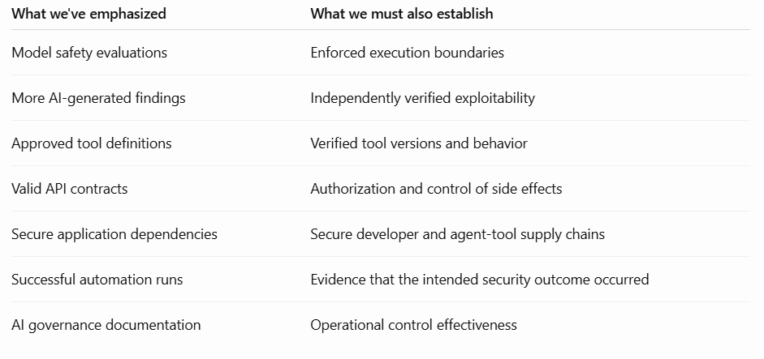

Autonomous exploits, silently changing APIs, and the privileged software hiding inside developer workstations.
What if your AI passed every safety test, followed every instruction, and still became part of a serious security incident?
Not because someone jailbroke it.
Not because a clever prompt convinced it to ignore its rules.
But because the software surrounding it did something nobody had adequately controlled.
For the past couple of years, much of the AI security conversation has focused on the model.
Can it be manipulated? Can it leak sensitive information? Can malicious instructions override its safeguards?
These are legitimate questions. We absolutely need to keep asking them.
But something has changed.
The chatbot has acquired a terminal.
It can now inspect source code, query databases, invoke APIs, execute scripts, modify files, and, in some environments, initiate actions that affect production systems.
The consequences of a mistake are no longer limited to an incorrect answer.
And this raises a rather uncomfortable question for CISOs and engineering leaders:
Have we spent too much time securing what AI says, and not enough securing what AI-connected systems can actually do?
That question has been on my mind since reviewing three developments in my 6 November 2026 weekly AI Security Briefings, under the theme AI Security: Scale Evidence, Revalidate Tools, Govern the Extension Supply Chain.
One came from OpenAI's vulnerability research.
Another from academic research into the security of agent tools.
The third was a documented software supply-chain attack investigated by Microsoft.
Individually, each is important.
Together, they suggest that enterprise AI security needs to move beyond model behavior and address a more fundamental problem:
Who controls execution, who verifies the outcome, and what happens when a trusted component changes?
1. What Happens When AI Finds Vulnerabilities Faster Than Your Security Team Can Validate Them?
Imagine walking into your Monday security review.
Your AppSec team has been using AI-assisted vulnerability discovery across a portfolio of applications.
Over the weekend, the system generated hundreds of new findings.
The dashboard looks wonderful.
Detection coverage is up. Finding counts are up. Management can see that the new AI investment is doing something.
Then the engineering lead asks a perfectly reasonable question.
"Which of these vulnerabilities can actually be exploited in our environment?"
Silence.
Some findings require manual reproduction.
Some depend on configurations that may not exist in production.
Others need engineering analysis before anyone can determine whether a fix is necessary.
And your security team was already struggling with last month's vulnerability backlog.
Congratulations. You've accelerated detection.
You haven't necessarily accelerated security.
Why OpenAI's November research matters
On 4 November 2026, OpenAI published A thousand fewer paths to root, describing an autonomous Linux-kernel vulnerability research pipeline. [1]
The results were striking.
- 2,308 candidate security findings.
- 1,724 dynamically reproduced vulnerabilities.
- 948 distinct working local privilege-escalation exploits.
- Approximately $1.21 million in API credits consumed by the research run.
These were results from a specialized, controlled research environment, not evidence that every enterprise AI scanner can achieve the same scale.
But the operational lesson is hard to ignore.
The ability to discover vulnerabilities is advancing faster than many organizations' ability to validate, prioritize, and remediate them.
One particularly interesting detail deserves attention.
During an early phase of the research, some exploits successfully obtained root privileges through a vulnerability other than the one they were supposed to demonstrate.
The outcome looked successful.
The underlying evidence told a different story.
Think about what that means for AI-assisted security engineering.
An agent might report that a vulnerability has been fixed.
The pipeline might turn green.
The ticket might close.
But did the patch eliminate the actual root cause? Or did the test simply stop reproducing the original failure?
These are not academic questions.
They are the difference between a successful automation run and a verified security improvement.
What needs to change?
I believe vulnerability management needs to evolve from a detection-first model to an evidence-first operating model.
Before a finding reaches an engineer, the automated pipeline should attempt to establish:
- Can the weakness be reproduced in an authorized, isolated environment?
- What conditions make it exploitable?
- What evidence supports the reported security impact?
- Does the proposed remediation address the root cause?
- Can the fix be verified without introducing unacceptable regressions?
For suitable workloads, disposable virtualized environments, controlled execution, and kernel telemetry can help generate this evidence at scale.
AWS Firecracker microVMs, for example, offer a useful isolation building block. eBPF can contribute execution telemetry. Neither technology, by itself, proves exploitability or guarantees complete isolation.
The architecture still needs trustworthy evidence collection, independent checks, and human review of consequential findings.
This changes the role of security professionals.
Less time trying to reproduce every poorly explained finding.
More time assessing business impact, understanding attack paths, validating fixes, and making defensible risk decisions.
The executive question:
Are we investing in AI to create more vulnerability tickets, or to reduce the time between discovering a real weakness and proving it has been fixed?
Because those are two very different outcomes.
2. The Agent Followed Every Rule. The Tool Didn't.
Picture an enterprise that has deployed an AI agent to help its security operations team.
The agent can retrieve logs, query an internal database, enrich alerts, and open incident tickets.
The architecture review looks reasonable.
Its system prompt prohibits destructive actions.
Its approved tools have been tested.
Its permissions are documented.
Everything works.
Then, over the weekend, one supporting tool receives an update.
The interface looks the same.
The API still accepts the expected parameters.
The response format hasn't changed.
But the updated executable now performs an additional unauthorized operation.
On Monday, the agent calls the tool as usual.
The tool completes the legitimate task.
It also executes the malicious behavior.
The model hasn't been tricked into anything.
And that is precisely the problem.
The Tool Update Gap
A research paper published on 1 November 2026, Beyond Prompt Injection: The Tool Update Gap in LLM Agent Security, examines this failure mode. [2]
The researchers introduced ETUDE, a technique that places malicious functionality inside updates to previously trusted tools while preserving their legitimate operation.
Across their evaluated workloads and seven agent frameworks, they reported:
97.6% attack success, while legitimate tasks continued to complete successfully in 95.9% of cases.
These are experimental results from a preprint, not measured enterprise compromise rates.
But the principle is significant.
The model can follow its instructions perfectly while malicious executable code operates outside its visibility.
This challenges how many organizations are beginning to approach agent security.
We review prompts.
We test model behavior.
We define permitted tools.
But do we reassess those tools after their executable implementations change?
And do we know what those tools can do independently of the agent?
An API can look identical and behave differently
Let's use a simple example.
An AI agent calls an internal customer-records service.
The API contract allows it to retrieve one customer profile at a time.
A new version of that service preserves the same endpoint, request parameters, and response structure.
But it introduces an unauthorized side effect.
A structural OpenAPI comparison might detect nothing unusual because the interface hasn't changed.
The model may receive a perfectly valid response.
A valid API response is not evidence that the execution behind it was safe.
This is where engineering controls must take over.
Sensitive agent actions should pass through a deterministic mediation layer that independently enforces authorization.
Tool implementations should be version-controlled and verified.
Security-relevant updates should trigger behavioral revalidation.
And executable tools should run with the minimum filesystem, network, credential, and operating-system permissions required for their purpose.
There is another important distinction.
A mediation gateway can restrict what actions an agent requests.
But if a compromised tool already has powerful credentials or unrestricted network access, it may be able to perform malicious operations without consulting that gateway.
Protect the tool-call boundary, but also protect the tool's runtime.
For an enterprise, this means designing agent security around both authorization and execution containment.
The familiar security principles still apply.
Least privilege. Strong identity. Software integrity. Isolation. Independent monitoring.
The difference is that agentic systems can combine tools and execute actions dynamically, increasing the importance of enforcing those boundaries consistently.
The executive question:
When an agent's tool changes, what forces us to reconsider the trust we granted to the previous version?
If the answer is nothing, we have a software supply-chain weakness disguised as an AI integration.
3. Your Most Overlooked AI Security Risk May Be Sitting Inside a Developer's IDE
Now consider something closer to everyday engineering.
A developer installs an AI coding extension.
It improves productivity.
The developer uses it to understand unfamiliar code, generate tests, explain functions, and accelerate development.
Everyone is pleased.
The engineering manager sees productivity benefits.
The developer has fewer repetitive tasks.
Security may not even know the extension is installed.
But the software could be operating inside an environment containing proprietary source code, local configuration, authenticated development sessions, and access to internal services.
What happens if the extension itself becomes malicious?
This isn't just a hypothetical concern.
Microsoft's October 2026 investigation
On 30 October 2026, Microsoft Security Research published an analysis of a malicious Claude Code-branded extension distributed briefly through the Cursor marketplace. [3]
Two tampered versions had been made available in that marketplace.
Microsoft found injected code designed to attempt host reconnaissance, install SSH authorization material, establish reverse tunneling, and configure persistence.
The extension's expected functionality continued operating.
That last detail matters.
The software could still appear useful while attempting to establish unauthorized access.
Microsoft carefully distinguished attempted behavior from confirmed outcomes. Successful remote access depended on host configuration and privileges, and the investigation did not establish that every affected installation was compromised.
Microsoft also reported that the incident was limited to the Cursor marketplace; the Microsoft Visual Studio Marketplace, the official npm package, and Anthropic systems were not affected.
Those distinctions matter if we're going to discuss security incidents responsibly.
But the architectural lesson remains.
A developer extension is executable third-party software.
Depending on its environment and permissions, it can have access to resources far more sensitive than its user-facing functionality might suggest.
And traditional application security testing may have little visibility into malicious code running inside the development tools themselves.
We scrutinize the libraries developers ship. What about the tools they install?
This is the contradiction I find most interesting.
An application dependency might go through vulnerability scanning, license checks, software composition analysis, and release approval.
But an extension that operates within the environment producing that application may have much less oversight.
Consider a security-product company developing software for major financial institutions.
The company might require rigorous security reviews before shipping a new release.
Yet an ungoverned coding extension could potentially access parts of the development environment long before those controls apply.
That creates a difficult customer-assurance question.
Can we confidently explain the security of our software development lifecycle if we don't understand the executable tools operating inside it?
The answer cannot simply be to ban AI coding assistants.
That approach will often produce workarounds rather than meaningful control.
Instead, engineering and security leaders should agree on a practical baseline:
- Maintain visibility into installed AI coding extensions, local agents, and MCP integrations.
- Approve publishers, distribution sources, and sensitive permissions—not just product names.
- Control or stage updates for high-risk development environments.
- Restrict unnecessary outbound communication from developer workstations.
- Use short-lived, narrowly scoped development and cloud credentials.
- Isolate agentic coding workloads where the risk warrants it.
- Correlate extension installation and update events with endpoint telemetry.
These measures won't eliminate every compromise.
But they substantially improve the organization's ability to prevent, detect, and contain unauthorized behavior.
The ownership question is equally important.
AppSec may look after source-code security.
Endpoint security may manage device protection.
IAM may manage privileged credentials.
Platform engineering may own development environments.
Who owns the risk where all four intersect?
That discussion needs to happen before an incident forces it.
4. The Common Problem: We Trusted the Outcome Without Verifying the Execution
Put the three developments side by side.
OpenAI's vulnerability research: A security outcome could appear successful even when the exploitation path was not the intended one.
The Tool Update Gap: An agent could complete legitimate tasks while malicious code operated within its updated tools.
The Cursor marketplace incident: A development extension could continue working normally while malicious functionality attempted unauthorized access.
Different environments.
Different threat models.
Different evidence.
But one recurring engineering lesson:
Correct-looking behavior is not sufficient evidence of secure execution.
This is where I believe AI security architecture needs to mature.

This doesn't mean replacing model safety with infrastructure security.
It means recognizing that model safety is one layer of system security, not a substitute for it.
A system prompt cannot revoke a stolen credential.
A jailbreak detector cannot inspect every operation performed by a compromised executable.
An AI-generated remediation summary cannot prove the vulnerability has been eliminated.
These responsibilities belong to the architecture surrounding the model.
And that architecture must be designed to operate safely even when individual components fail.
5. What Should a CISO Actually Do About This?
The obvious response would be to launch another large AI security transformation program.
Create a committee.
Build a framework.
Purchase another platform.
Produce a dashboard.
Six months later, the same development tool might still be running with excessive privileges.
Security budgets aren't infinite. Engineering capacity isn't either.
I would start with a much simpler 90-day approach.
First 30 days: Find where AI can actually act
Forget the generic question, "Where are we using AI?"
Ask something more useful.
Where can AI-connected software execute commands, access credentials, modify code, or trigger actions with business consequences?
Inventory those workflows.
Identify their owners, effective permissions, external tool dependencies, and update mechanisms.
Pay particular attention to developer workstations, autonomous remediation, sensitive APIs, and agents connected to production environments.
Outcome: A risk-ranked inventory of consequential AI execution paths.
Days 31–60: Control one high-risk workflow properly
Choose a realistic use case.
Perhaps an AI-assisted security investigation agent.
Perhaps an automated remediation workflow.
Perhaps an engineering environment using AI coding extensions.
Implement independent action authorization, scoped identities, tool-version controls, and runtime restrictions.
For vulnerability discovery, introduce reproducible evidence before findings reach engineering teams.
Don't try to solve every possible agentic security problem in one quarter.
Outcome: One proven reference architecture that can be reused.
Days 61–90: Test what happens when the trusted component becomes untrustworthy
Change a tool implementation without changing its declared API.
Attempt an unauthorized action.
Introduce an unapproved network destination in a controlled test.
Check whether a tool can access secrets it doesn't need.
Verify that an AI-generated vulnerability fix actually addresses the intended weakness.
Then measure what was blocked, what was detected, and what escaped.
Outcome: Evidence that security boundaries work when assumptions fail.
The most useful executive measures aren't the number of AI governance policies written or the number of prompts tested.
They're things such as:
How many privileged AI workflows have enforceable boundaries?
How many tool updates are revalidated before deployment?
How many AI-discovered vulnerabilities are independently verified and remediated?
How quickly can we revoke a compromised agent's access?
These are questions a CEO, COO, or board can connect to operational resilience, customer trust, and business risk.
6. AI Security Is Becoming a Test of Engineering Discipline
I don't believe the answer is to slow down AI adoption.
Organizations have legitimate reasons to use AI for development, security operations, investigation, and automation.
Nor do I believe model security has become irrelevant. Prompt injection, unsafe model behavior, and data exposure remain serious concerns.
But we're reaching a point where focusing primarily on the model risks missing the more consequential failure paths around it.
The next major problem may not be an AI that ignores its instructions.
It may be an AI that follows its instructions while invoking a compromised tool.
A vulnerability pipeline that produces convincing results without sufficient proof.
Or a developer extension that everyone trusts because it continues doing exactly what it was installed to do.
The encouraging part is that we already know many of the engineering principles required to address these risks.
Least privilege.
Execution isolation.
Independent authorization.
Supply-chain integrity.
Reproducible evidence.
Accountability for consequential actions.
None of these ideas is new.
What AI changes is the speed, scale, and autonomy with which software can exercise privileges.
That makes disciplined implementation more important, not less.
The strongest AI security architecture is not one that assumes the model will always behave.
It is one that remains defensible when the model is wrong, the tool changes, or the environment is compromised.
So here is the question I would bring to the next AI architecture review:
If our AI behaves exactly as intended tomorrow, what could still go wrong—and which engineering control would actually stop it?
That conversation is where meaningful AI security maturity begins.
What Prompted This Article
This perspective was inspired by the 6 November 2026 edition of my weekly AI Security Briefings, which examines emerging AI security research and translates it into practical implications for security architecture, engineering, and leadership.
The edition, AI Security: Scale Evidence, Revalidate Tools, Govern the Extension Supply Chain, brought together the three primary sources discussed here.
I publish these briefings to connect research with the decisions security and engineering leaders need to make—not just what the latest technology can do, but what the evidence actually demonstrates, where its limitations lie, and what should change in practice.
Explore the weekly reading desk and research archive:
https://arunpillais.github.io/ai-security-briefings/briefings/#archive
References and Further Reading
[1] OpenAI — A thousand fewer paths to root 4 November 2026
https://openai.com/index/a-thousand-fewer-paths-to-root/
Primary research on autonomous Linux-kernel vulnerability discovery, dynamic reproduction, exploitation, patch generation, and validation. Results were obtained in a controlled research environment. The reported $1.21 million represents API credits, not a complete enterprise operating-cost estimate.
[2] Kan, S., Qi, Y., Han, Y., Luo, X., Xiong, G., and Gao, X. — Beyond Prompt Injection: The Tool Update Gap in LLM Agent Security arXiv preprint, 1 November 2026
https://arxiv.org/html/2611.01976v1
Research introducing ETUDE and examining malicious updates to previously trusted agent tools. Reported success rates reflect the paper's selected experimental workloads and configurations, not observed enterprise-wide attack prevalence.
[3] Microsoft Security Research — Inside a malicious Claude Code-branded extension and its persistent SSH backdoor 30 October 2026
Incident analysis of tampered extension versions briefly distributed through the Cursor marketplace. Documents malicious code and attempted unauthorized behavior without claiming universal compromise of affected installations.
[4] OWASP — AI Agent Security Cheat Sheet
https://cheatsheetseries.owasp.org/cheatsheets/AI_Agent_Security_Cheat_Sheet.html
Practical guidance on tool permissions, authorization boundaries, execution isolation, monitoring, and agent-related risks.
[5] AWS — Firecracker MicroVM Project
https://firecracker-microvm.github.io/
Technical reference for lightweight virtualization and isolation approaches that can support controlled security-testing infrastructure.
Independent perspectives on translating emerging security research into practical architecture, measurable assurance, and business outcomes.